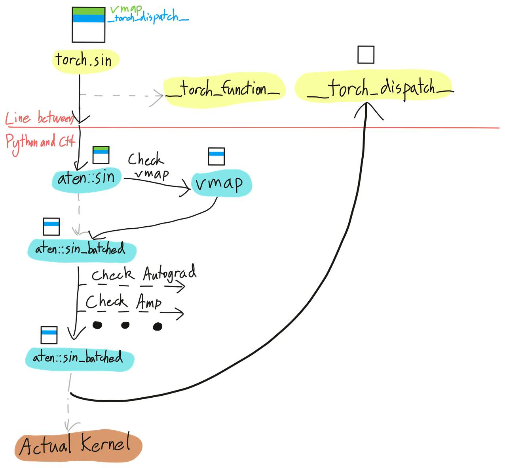
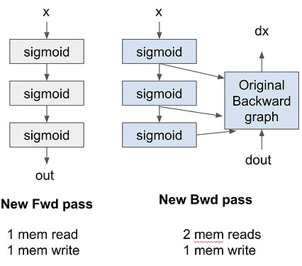

__torch_dispatch__ 把前向和后向一起追踪进一张联合图，再用 partition_fn 切回两张独立图，编译器第一次能跨前向后向的边界做优化。torch.fx 和 TorchDynamo 解决的是同一件事：把 Python 代码变成一张图。但这两种追踪都只覆盖前向传播，训练里真正耗时的那一半，编译器一直看不到。
后向图原本由 autograd 引擎在前向跑完的那一刻动态搭出来，编译器插不上手，前向与后向之间那条边界也就无从优化。AOTAutograd 补上了这一半：函数执行之前，前向和后向已经一起被追踪进同一张 FX 图。
从一个最小的 aot_function 例子入手，逐张读前向图和后向图，再看联合图怎么建起来、怎么被切回去，以及 min-cut 重算为什么能用几乎免费的计算换掉真实的访存。
前两篇里，torch.fx 用符号追踪把 Python 代码变成图，TorchDynamo 在字节码层面捕获图。但两者抓到的都只有前向传播。后向传播怎么办？
在 torch.compile 这套生态出现之前，用户可以用 torch.fx 追踪捕获前向图，后向却仍由 autograd 引擎动态生成，编译器只能看到前向那一半。这意味着前向和后向两张计算图无法合并成一张，跨这条边界的优化也就无从谈起。
AOTAutograd 解决的正是这件事：它在执行之前把前向和后向一起追踪出来，编译器于是可以把整张图当成一个整体来做优化。
先从 functorch.compile 里最简单的 aot_function 入手。定义一个把两个张量相乘的函数，外面套一个只负责打印图的编译器：
import torch
from functorch.compile import aot_function, make_boxed_func
def fn(a, b):
return a * b
def compiler_fn(fx_module, _):
print(fx_module.code)
return make_boxed_func(fx_module.forward)
a, b = [torch.randn(2, 4, requires_grad=True, device="cuda")
for _ in range(2)]
aot_fn = aot_function(fn, fw_compiler=compiler_fn,
bw_compiler=compiler_fn)
res = aot_fn(a, b)
loss = res.sum()
loss.backward()运行后会打印两张图，一张前向、一张后向，我们逐张读。前向长这样：
def forward(self, primals_1, primals_2):
mul = torch.ops.aten.mul.Tensor(primals_1, primals_2)
return (mul, primals_1, primals_2)primal 是什么？primal 是函数的原始输入，按 autograd 的术语，就是你施加运算的那些张量。这里 primals_1 = a，primals_2 = b。
前向返回 (mul, primals_1, primals_2)，为什么要返回三个值？第一个是真正的输出（a * b），另外两个张量是为后向保存下来的。
再看后向图：
def forward(self, primals_1, primals_2, tangents_1):
mul_1 = torch.ops.aten.mul.Tensor(tangents_1, primals_1)
mul_2 = torch.ops.aten.mul.Tensor(tangents_1, primals_2)
return (mul_2, mul_1)前两个参数 primals_1, primals_2 是前向传下来的已保存张量，tangents 就是后向传播里算出来的传入梯度。
后向返回 (mul_2, mul_1)，梯度顺序与前向的原始输入 (a, b) 一致。正是这个顺序约定，让 autograd 知道哪个梯度属于哪个参数。
正常情况下，PyTorch 的 autograd 在前向传播过程中动态构建后向图，后向图要等前向结束才算最终确定。这种做法很灵活，代价是执行之前你永远看不到完整图。
AOTAutograd 换了做法：它在函数真正执行之前，就把前向和后向传播都以提前（Ahead-of-Time）的方式追踪好，两张计算图提前交到你手上。
整体流程是这样几步：
1 AOT Dispatch 追踪前向和后向，生成一张联合图（joint graph），本质是一张同时包含前向与后向 Aten/Prim 算子的 FX 图。
2 Partition 用 partition_fn 把联合图切成独立的前向图和后向图。
3 Optional decomposition 把高层算子拆成粒度更小的算子。
4 两张图分别编译，最后整合进一个 torch.autograd.Function。
PyTorch 有一个 dispatcher，你可以把它理解成路由器。每次调用像 a * b 这样的算子，dispatcher 都会根据输入张量的属性决定跑哪个 kernel：是 CUDA 张量就跑 CUDA kernel，需要梯度就用 autograd 包一层。一个算子通常要穿过多个分发层，才到达最终 kernel。

__torch_dispatch__ 是一个在最终 kernel 执行之前触发的钩子。它让你拿到原始 ATen 算子和它的输入，于是可以在算子层面拦截、检查或改写行为。
torch.fx 里有个 make_fx，它和普通的 symbolic_trace 不同，是通过 __torch_dispatch__ 实现的，因此能访问底层 ATen 算子。
看下面的例子。
import torch
from torch.fx.experimental.proxy_tensor import make_fx
def f(x, y):
return x + y
x = torch.randn(8)
y = torch.randn(8)
g = make_fx(f)(x, y)
print(g.code)make_fx 经由 dispatcher 追踪，捕获到的是底层 ATen 算子 torch.ops.aten.add.Tensor。
def forward(self, x_1, y_1):
add = torch.ops.aten.add.Tensor(x_1, y_1)
return add符号追踪则是另一套，抽象层级高得多。
from torch.fx import symbolic_trace
h = symbolic_trace(f)
print(h.code)def forward(self, x, y):
add = x + y
return adddispatcher 为什么重要到这里就清楚了。接下来看联合图是怎么建起来的。
把前向和后向放进同一张 FX 图，价值在于能跨整条边界做优化，而不是把前向和后向分开看。
思路写成伪代码是这样：
def joint_forward_backward(*inputs):
outputs = forward_fn(*inputs)
grads = torch.autograd.grad(
outputs, inputs, grad_outputs=...
)
return outputs, grads追踪过程中，每个算子都会被 __torch_dispatch__ 拦截，对每个算子，AOTAutograd 依次做四件事：
1 从张量上取回 FX proxy。
2 用 ATen 算子作为 target，在 FX 图里创建一个 call_function 节点。
3 用真实张量把算子跑一遍。
4 把执行结果张量绑定回 proxy。
这个过程一直重复，直到前向和后向里的算子全部被追踪完，一张完整的联合图就出来了。
拿到联合图之后，要把它切回独立的前向图和后向图。AOTAutograd 的 partition_fn 负责这件事，它内置了两种策略，用一个具体例子来对比：
def fn(a, b, c, d):
x = a + b + c + d
return x.cos().cos()这是默认行为，也是第一个例子里那种做法：从输入到前向输出，途经所有算子的输出都保留下来，后向需要的张量同样作为前向输出返回，中间结果一个不丢。
def forward(self, primals_1, primals_2, primals_3, primals_4):
add = torch.ops.aten.add.Tensor(primals_1, primals_2)
add_1 = torch.ops.aten.add.Tensor(add, primals_3)
add_2 = torch.ops.aten.add.Tensor(add_1, primals_4)
cos = torch.ops.aten.cos.default(add_2)
cos_1 = torch.ops.aten.cos.default(cos)
return (cos_1, add_2, cos) # saves add_2 and cos for backward后向就把这些保存下来的张量当作输入收下来：
def forward(self, add_2, cos, tangents_1):
sin = torch.ops.aten.sin.default(cos)
neg = torch.ops.aten.neg.default(sin)
mul = torch.ops.aten.mul.Tensor(tangents_1, neg)
sin_1 = torch.ops.aten.sin.default(add_2)
neg_1 = torch.ops.aten.neg.default(sin_1)
mul_1 = torch.ops.aten.mul.Tensor(mul, neg_1)
return (mul_1, mul_1, mul_1, mul_1)这一段背景是为了说清下一项技术为什么有效。
在 GPU 上，一个算子耗掉的时间大头不是算术，而是内存的读写。对逐点算子（add、mul、cos、sin、relu 等）尤其如此，它们对每个元素几乎不做多少计算。
所以把多个逐点算子融合起来，可能一点忙都帮不上，因为瓶颈在访存，不在浮点运算量。
放到训练里看，如果你的图是一条逐点算子链，前向和后向都是逐点算子，运行时间正比于读写的数据量。默认切分把每个中间张量都保存下来，等于把访存成本付了两遍：前向写一次做保存，后向读一次做加载。
那如果只保存输入、中间结果在后向里重算呢？这会带来两件事：
1 前向和后向之间需要保存的张量变少。
2 访存减少，因为既不用写中间结果去保存，也不用读回来加载。

重算本身几乎不花钱，因为这些逐点算子本来就被访存卡住，多出来的浮点运算会藏在内存延迟背后。这正是 activation checkpointing（激活重计算）能成立的原因，AOTAutograd 用 min-cut 建模把它一般化了。
既然不必保存所有中间张量，那怎么决定哪些保存、哪些重算？AOTAutograd 把这件事写成最大流/最小割（max-flow/min-cut）问题，算法细节可以另外去读。
把同一段代码换成 min-cut 切分策略：
from functorch.compile import min_cut_rematerialization_partition
aot_fn = aot_function(fn, fw_compiler=compiler_fn,
bw_compiler=compiler_fn,
partition_fn=min_cut_rematerialization_partition)看前向图，cos 不再被保存了：
def forward(self, primals_1, primals_2, primals_3, primals_4):
add = torch.ops.aten.add.Tensor(primals_1, primals_2)
add_1 = torch.ops.aten.add.Tensor(add, primals_3)
add_2 = torch.ops.aten.add.Tensor(add_1, primals_4)
cos = torch.ops.aten.cos.default(add_2)
cos_1 = torch.ops.aten.cos.default(cos)
return (cos_1, add_2) # only saves add_2, NOT cos后向图里，cos 是从 add_2 重算出来的，而不是读保存下来的值。
def forward(self, add_2, tangents_1):
cos = torch.ops.aten.cos.default(add_2) # recomputed!
sin = torch.ops.aten.sin.default(cos)
neg = torch.ops.aten.neg.default(sin)
mul = torch.ops.aten.mul.Tensor(tangents_1, neg)
sin_1 = torch.ops.aten.sin.default(add_2)
neg_1 = torch.ops.aten.neg.default(sin_1)
mul_1 = torch.ops.aten.mul.Tensor(mul, neg_1)
return (mul_1, mul_1, mul_1, mul_1)到这里，前向图、后向图和联合图都齐了，整条栈还差最后一块拼图：TorchInductor，它负责把捕获到的图降级编译成高效的 Triton 代码。
__torch_dispatch__ 拦下，依次取 FX proxy、建 call_function 节点、用真实张量执行、把结果绑回 proxy，前向和后向因此落在同一张图里，而不是各自独立。fx_module.code 的编译器：前向多返回了哪些张量、后向把它们当作什么收下，读几张图就能看清编译器的内存账本是怎么记的。这也是理解 torch.compile 内核比啃后端代码更快的入口。参考：https://jino-rohit.github.io/blogs/14_aot_autograd.html